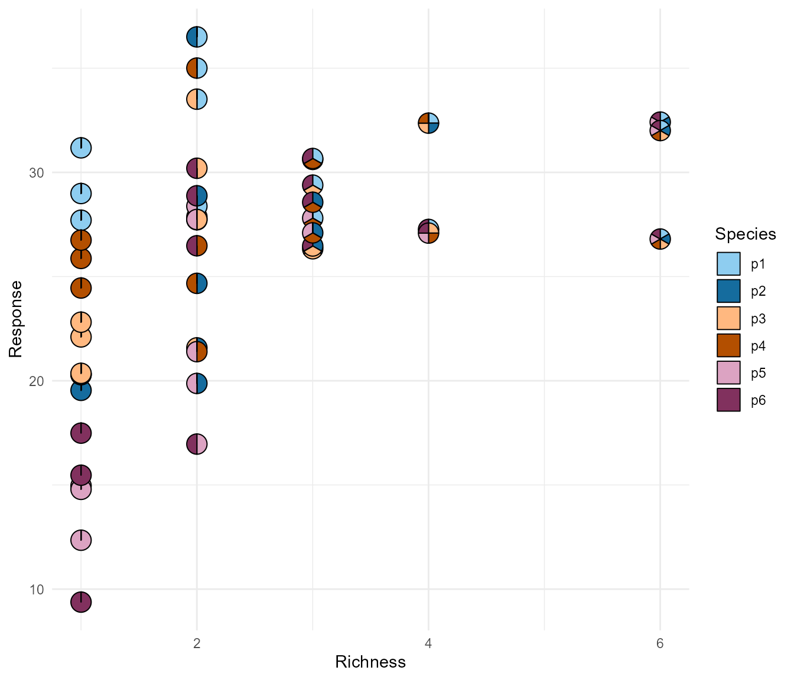
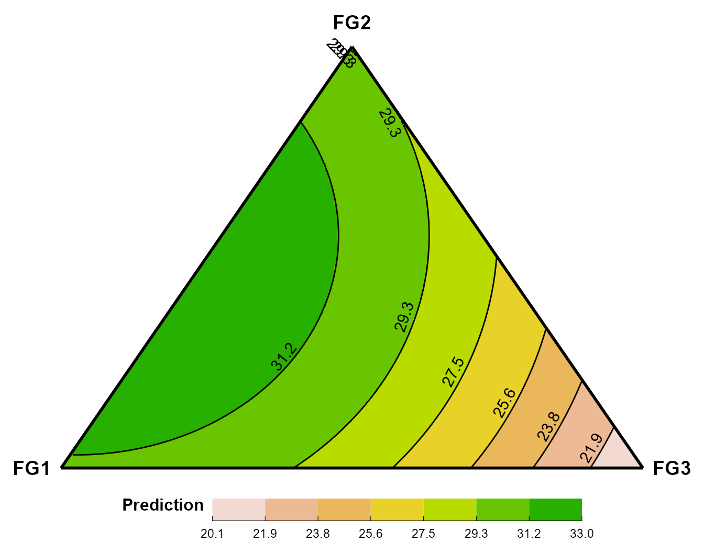
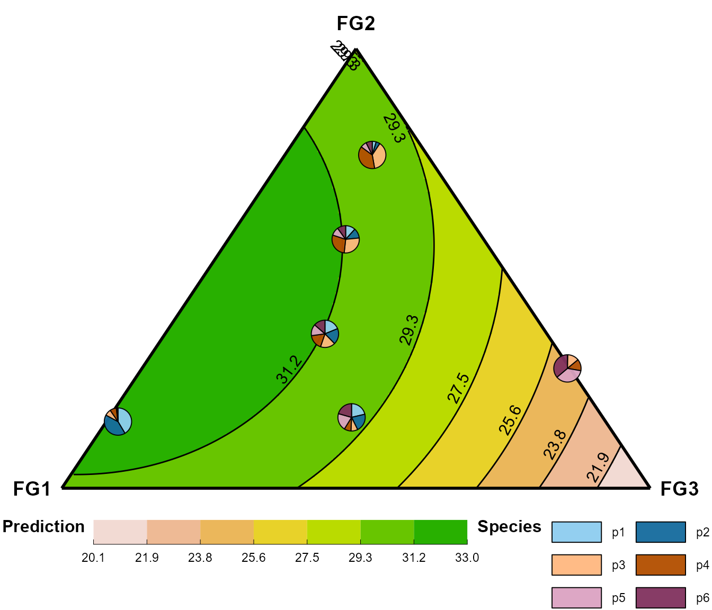

This example shows a use-case of the PieGlyph package with
compositional data. These datasets contain non-negative values giving
the relative information between different attributes of a particular
system. There is also often a constant-sum (usually sum to 1) constraint
on these values and they are often represented as proportions or
percentages.
The PieGlyph package work best with compositional data as
pie-charts are good at showing relative proportions.
Load data
We are using data from the DImodels package. This is a
package suitable for modelling the biodiversity and ecosystem
functioning (BEF) relationship using the Diversity-Interactions (DI)
modelling approach introduced by Kirwan et al. (2009) doi:10.1890/08-1684.1.
We use the sim4 dataset, which is a simulated dataset
showing the value of an ecosystem function (assumed to be yield) from an
ecosystem comprised of three species of plants. The response is shown as
we vary the proportions of the three species across the simplex space.
data(sim4)
The data consists of 141 rows and 9 columns. richness is a
numeric variable indicating the number of species in the community and
can take an integer value between 1 and 6 (inclusive). p1,
p2, p3, p4, p5, and
p6 are the columns showing the initial proportions of the
six species and response is the simulated value of the
ecosystem function. treatment is assumed to be the level of
fertilizer applied to the communities and takes a value of either 50,
150 or 250. Further it is assumed that the six species in the experiment
are grouped depending on the function they perform in the ecosystem,
with species 1 and 2 grouped in functional group 1, species 3 and 4 in
functional group 2 and species 5 and 6 in functional group 3.
To simplify our example we only focus on communities receiving a fertilizer treatment of 150.
Pie-scatter plot
We can visualise the raw data as a scatterplot of response vs community, where each point will be a pie-chart showing the proportions of the three species.
ggplot(data = raw_data)+
# Pie-charts
geom_pie_glyph(aes(x = richness, y = response),
slices = c('p1','p2','p3','p4','p5','p6'),
colour = 'black')+
# Axis and legend titles
labs(x = 'Richness', y = 'Response', fill = 'Species')+
# Colours for segments of the pie-chart
scale_fill_manual(values = c('#8ecdf0', '#156c9e','#ffb880','#b34f00','#dca3c2','#81315e'))+
theme_minimal()
This plot indicates that on average as we increase the richness of a community, the response tends to increase. A possible reason for this could be that as richness increase, the species interact with each other which results in a positive effect on the response.
Further there also seem to be variation in the response within a given richness level, which can be attributed to species composition and any species-specific effects.
We can verify these observations by fitting a regression model which expresses the response as a combination of species-specific effect and species interactions.
We use the DI() function from the DImodels
package to fit this model. The DI() function allows us to
specify the structure of the interaction between species. We assume a
single common average interaction between all species and fit the model.
# The parameters of the function are as follows:
# y: name of column containing the response variable
# DImodel: Structure of the interaction (average in this case)
# prop: columns containing the six species proportions
# data: data used to fit the model
m1 <- DI(y = 'response', DImodel = 'AV',
prop = c('p1','p2','p3','p4','p5','p6'),
data = raw_data)
#> Fitted model: Average interactions 'AV' DImodel
Note: Since this is a regression model we can also fit this model
using the regular glm() function. However that would
require us to manually calculate the interaction terms, the
DI() function automatically does that for us.
The model summary shows that all species-specific effects as well as the average interaction effect are significant.
summary(m1)
#>
#> Call:
#> glm(formula = fmla, family = family, data = data)
#>
#> Deviance Residuals:
#> Min 1Q Median 3Q Max
#> -5.8627 -1.1832 0.1411 1.3792 5.6205
#>
#> Coefficients:
#> Estimate Std. Error t value Pr(>|t|)
#> p1 30.298 1.319 22.972 < 2e-16 ***
#> p2 19.974 1.319 15.144 < 2e-16 ***
#> p3 22.381 1.319 16.969 < 2e-16 ***
#> p4 24.519 1.319 18.590 < 2e-16 ***
#> p5 13.155 1.319 9.974 2.08e-12 ***
#> p6 15.240 1.319 11.555 2.55e-14 ***
#> AV 23.068 2.509 9.193 2.06e-11 ***
#> ---
#> Signif. codes: 0 '***' 0.001 '**' 0.01 '*' 0.05 '.' 0.1 ' ' 1
#>
#> (Dispersion parameter for gaussian family taken to be 7.08006)
#>
#> Null deviance: 31659.3 on 47 degrees of freedom
#> Residual deviance: 283.2 on 40 degrees of freedom
#> AIC: 233.79
#>
#> Number of Fisher Scoring iterations: 2After fitting the model, a natural question that arises next would be that ‘Which combination of species gives the best performance?’.
Another question of interest could be, ‘Is the high performance stable over a large range of communities or restricted to only a small set of communities?’.
We could make predictions from the model for different communities across the simplex space and filter the best performing community. But answering the question about stability is difficult.
A visualisation that shows both, the best performing community as well as the stability across the simplex space would be really helpful.
This six species example is spread across the 6-d simplex, and unfortunately it is very difficult to visualise anything over the 4-d simplex. However, we could visualise the three functional groups of the species, instead of their individual proportions. The three functional groups are spread across the 3-d simplex space and that can be visualised neatly as ternary diagram.
This can be thought of as a version of dimension reduction where the species level information is combined and embedded within the functional groups level. This reduces the dimensionality of the data, enabling us to effectively visualise it.
Visualising model predictions
Creating raw data for visualising the ternary diagram
# Create grid of points across 2-d space
tern_data <- expand.grid(base=seq(0,1,l=100*2),
high=seq(0,sin(pi/3),l=87*2*3))
# Filter out points which belong within the 3-d ternary
tern_data <- tern_data %>%
filter(high < (base*sin(pi/3)*2),
high < ((1-base)*sin(pi/3)*2))
# Map the 2-d points to 3-d ternary points and get species proportions
tern_data <- tern_data %>%
mutate(FG2 = high*2/sqrt(3),
FG3 = base - high/sqrt(3),
FG1 = 1 - FG2 - FG3,
p1 = FG1/2,
p2 = FG1/2,
p3 = FG2/2,
p4 = FG2/2,
p5 = FG3/2,
p6 = FG3/2) %>%
mutate(pred = predict(m1, newdata = .))
p1, p2, p3, p4,
p5, and p6 are the columns showing the
proportions of the six species. FG1 (FG1 = p1 + p2),
FG2 (FG2 = p3 + p4), and FG3(FG3 = p5 + p6)
represent the proportions of the three functional groups.
pred is the predicted response for each community.
base and high are the 2-d mappings of the 3-d
simplex space for visualising the 3-d simplex in 2 dimensions.
head(tern_data)
#> base high FG2 FG3 FG1 p1 p2 p3 p4
#> 1 0.005025126 0 0 0.005025126 0.9949749 0.4974874 0.4974874 0 0
#> 2 0.010050251 0 0 0.010050251 0.9899497 0.4949749 0.4949749 0 0
#> 3 0.015075377 0 0 0.015075377 0.9849246 0.4924623 0.4924623 0 0
#> 4 0.020100503 0 0 0.020100503 0.9798995 0.4899497 0.4899497 0 0
#> 5 0.025125628 0 0 0.025125628 0.9748744 0.4874372 0.4874372 0 0
#> 6 0.030150754 0 0 0.030150754 0.9698492 0.4849246 0.4849246 0 0
#> p5 p6 pred
#> 1 0.002512563 0.002512563 30.90583
#> 2 0.005025126 0.005025126 30.90795
#> 3 0.007537688 0.007537688 30.90948
#> 4 0.010050251 0.010050251 30.91043
#> 5 0.012562814 0.012562814 30.91080
#> 6 0.015075377 0.015075377 30.91059Ternary diagram with predictions across the 3-d simplex
# breaks for contour plot
breaks <- round(seq(min(tern_data$pred), max(tern_data$pred), length.out = 8), 1)
tern_plot <- ggplot(data = tern_data,
aes(x = base, y = high, fill = pred, z = pred))+
# Tiling the ternary space
geom_raster()+
# Add contour lines
geom_contour(colour = 'black', breaks = breaks)+
# Add labels on the contour lines
geom_text_contour(skip=0, breaks = breaks,
label.placer = label_placer_fraction(0.5),
size=4, nudge_x = -0.02)+
# Add borders around the ternary
geom_segment(data = data.frame(x = c(0, 0, 1),
y = c(0, 0, 0),
xend = c(1, 0.5, 0.5),
yend = c(0, sqrt(3)/2, sqrt(3)/2),
pred = 0),
aes(x = x, y = y, xend=xend, yend=yend),
linewidth=1)+
# Add labels for the ternary
geom_text(data = data.frame(base = c(0, 0.5, 1),
high = c(0, sqrt(3)/2, 0),
label = c('FG1', 'FG2', 'FG3'),
pred = 0),
aes(label=label), size=5, fontface='bold',
nudge_x = c(-0.05, 0, 0.05), nudge_y = c(0, 0.05, 0))+
# Choose colours for the different regions in the contour
scale_fill_stepsn(colours = terrain.colors(n = 8, rev = T),
breaks = breaks,
limits = c(breaks[1], breaks[8]))+
# Make legend continous instead of categorical
guides(fill = guide_bins(frame.colour = 'black',
ticks.colour = 'black',
title = 'Prediction',
show.limits = T))+
# Get rid of original plot axes
theme_void()+
# Adjust legend position and size
theme(legend.position = 'bottom',
legend.key.size = unit(0.075, 'npc'),
legend.key.height = unit(0.04, 'npc'),
legend.title = element_text(face='bold',
size = 12, vjust = 1))
tern_plot
This figure shows a contour map of the expected performance of communities across the 3-d simplex of the three functional groups. It is evident that the high performance of stable across a wide range of communities.
Overlay ternary with pie-charts
In order to identify the best performing community we can now overlay this ternary diagram with pie-charts showing the proportions of the best performing community.
# Get the best performing community
best_com <- tern_data %>% filter(pred == max(pred))
tern_plot +
# Add a new scale for colour the species proportions
ggnewscale::new_scale_fill()+
# Add a pie-chart for the selected communities
geom_pie_glyph(data = best_com, radius = 0.5,
slices = c('p1','p2','p3','p4','p5','p6'),
colour = 'black', alpha = .95)+
# Colour the sectors of the pies
scale_fill_manual(values = c('#8ecdf0','#156c9e',
'#ffb880','#b34f00',
'#dca3c2','#81315e'),
name = 'Species') +
# Adjust the legend of the species colours
guides(fill = guide_legend(nrow = 3, byrow = T))
This shows that the best performing community community consists of the
species p1,p2,p3, and
p4 in roughly equal proportions.
Thus even though the visualisation is at the functional group level (linear combination of species), we can get species-level information using these pie-charts.
We can also add pie-charts representing any specific communities whose performance we might be interested to monitor.
# Select a random subset of communities
set.seed(98765)
com_interest <- tern_data %>%
slice(round(runif(6, 1, nrow(.))))
tern_plot +
# Add a new scale for colour the species proportions
ggnewscale::new_scale_fill()+
# Add a pie-chart for the selected communities
geom_pie_glyph(data = com_interest, radius = 0.5,
slices = c('p1','p2','p3','p4','p5','p6'),
colour = 'black', alpha = .95)+
# Colour the sectors of the pies
scale_fill_manual(values = c('#8ecdf0', '#156c9e',
'#ffb880','#b34f00',
'#dca3c2','#81315e'),
name = 'Species') +
# Adjust legend of species colours
guides(fill = guide_legend(nrow = 3, byrow = T))
This idea can be also generalized to other situations with compositional data, where we reduce the dimensionality of the data by taking linear combinations of the certain variables and then visualise those linear combinations to get a general idea about the data. We could then overlay the plot with pie-charts at specific locations to get information about the original dimensions of the data. This could help us to reduce the tradeoff between dimensionality reduction and axis-interpretablity and visualise high dimensional data more effectively.